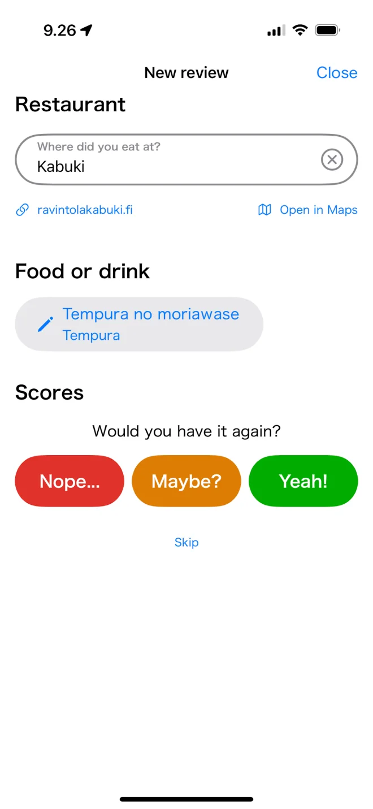

Japanilainen ruoka Suomessa: mistä löytää aitoa
Suomella ja Japanilla on yllättävän paljon yhteistä: hiljaisuus, design, sauna ja kylpykulttuuri sekä rakkaus hyvään kalaan. Japanilaista ruokaa on Suomessa enemmän kuin koskaan, mutta aidon löytäminen vaatii vähän tietoa. Tässä mitä odottaa ja mistä etsiä.
Missä japanilainen ruoka on

Suurin osa Suomen japanilaisista ravintoloista, sushitiskeistä ja aasialaisista ruokakaupoista on pääkaupunkiseudulla (Helsinki, Espoo ja Vantaa). Tampereella, Turussa ja Oulussa on myös hyviä vaihtoehtoja, mutta jos haluat valikoimaa ramenista izakayoihin ja shokudōjen riisikulhoihin, Helsinki on oikea paikka. Siksi myös Savory Scores keskittyy Helsinkiin.
Mitä odottaa
- Sushia on kaikkialla, myös buffeteissa ja ruokakaupoissa, mutta laatu vaihtelee paljon. Katso paras sushi Helsingissä.
- Lohi on kuningas. Suomalainen ja norjalainen lohi on erinomaista, joten lohinigiri on usein kohokohta.
- Japanilainen arkiruoka on piilotettu helmi. Katsudonia, curryä, teishokua ja ramenia löytää yhä helpommin. Katso donburi Helsingissä.
- Lounas on paras diili. Arkilounaat ovat illallista edullisempia. Katso japanilainen lounas Helsingissä.
- Hinnat ovat pohjoismaiset. Varaudu maksamaan enemmän kuin Japanissa, ja illallisesta enemmän kuin lounaasta.
Japanilaisille asukkaille ja vierailijoille
Japanilaisten mielipide on juuri sitä, mitä Helsingin japanilaisen ruoan skene kaipaa. Savory Scores toimii myös japaniksi, ja jokaisen annoksen voi arvioida autenttisuuden lisäksi maun mukaan, joten muut löytävät paikat, jotka maistuvat kotoisilta. Onko sinulla japanilaisia ystäviä tai työkavereita? Vinkkaa heille japaninkielinen sivumme.
Tuletko Helsinkiin muualta? Näin käytät Savory Scoresia ennen matkaa
- Lataa sovellus ja selaa Helsingin japanilaisia annoksia kategorioittain ennen matkaa.
- Tallenna annokset ja ravintolat, joita haluat kokeilla. Ne odottavat tallennuksissasi, kun saavut.
- Käytä Avaa kartalla -toimintoa päästäksesi perille.
- Arvioi, mitä syöt, ja auta seuraavaa kävijää.
Huom: Savory Scores on Helsingin japanilaisen ruoan katalogi. Suurin osa arvioista on pääkaupunkiseudulta.
Löydä suosikkisi Helsingistä. Savory Scores on ilmainen iPhonelle ja iPadille: hae annosta, vertaa kaikkia kaupungin versioita ja arvioi se yhdellä napautuksella.